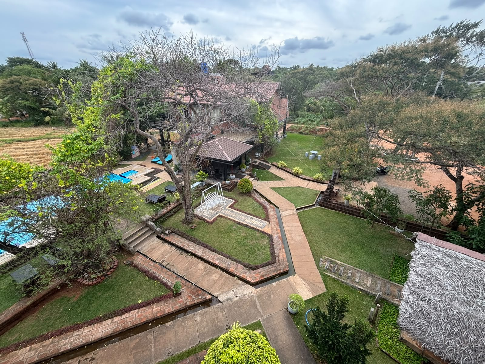

Heritage & culture
Anuradhapura
A relaxing base for discovering Sri Lanka's ancient capital and sacred sites. Guest experiences can include bicycles, tuk-tuks or motorbikes by arrangement, Sigiriya tours and safari excursions.
11 rooms listedPool & gardenTours by arrangement
Explore Anuradhapura